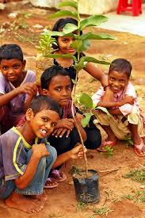

Support our mission
to bring hope and
change to lives.
Donate now
Help a soul
 (1).jpg)
.jpg)
 (1).jpg)
.jpg)
 (1).jpeg)

About us
Lighting the Path to Change with Basti Ki Pathshala Foundation
At Basti Ki Pathshala Foundation, we are more than just an organization – we are a movement, driven by the belief that education is the cornerstone of empowerment. Established under the Indian Societies Act of 1860, we stand as a beacon of hope in underserved communities, dedicated to breaking the chains of poverty through the transformative power of learning.
Join us in our quest to rewrite the narrative of education, one success story at a time. Together, let’s build a world where every child has the opportunity to dream, to learn, and to soar. Welcome to Basti Ki Pathshala Foundation – where hope is our currency, and education is our legacy.
🌱 Nurturing Lives, One Sapling at a Time
At Basti Ki Pathshala Foundation, we believe that real change begins with small acts of care — just like planting a tree. Through our grassroots initiatives, we teach children not only the importance of education but also how to nurture the environment and one another.
By engaging young minds in acts of kindness and responsibility, we’re sowing the seeds of a brighter, greener, and more compassionate future. Every sapling planted by these children is a symbol of hope, growth, and the potential for transformation — both of the earth and of their own lives. Join hands with us to water these dreams. Let’s grow together.

At Basti Ki Pathshala Foundation, we see every sapling as a beginning — a promise of care, growth, and sustainability. Our initiative brings children closer to nature, teaching them that protecting the environment is as important as learning in a classroom. Through guided plantation drives, our students not only plant trees but also grow with them — understanding patience, responsibility, and the joy of giving back to the Earth. Each tree becomes a living lesson — rooted in hope, watered by kindness, and growing toward a better future. Join us in cultivating not just green spaces, but also green hearts. 🌿
Vision & Mission
🌟 Vision -
build a future where every child, regardless of their background, has access to quality education, a clean environment, and the opportunity to grow into a compassionate and responsible citizen.
🎯 Mission -
To uplift underprivileged children through holistic learning that nurtures both the mind and the environment. We aim to provide free education, install values of sustainability, and empower young minds to become changemakers within their communities.
Why join us?By joining us, you’re not just volunteering or donating — you’re becoming a part of a movement that empowers the underprivileged through education, environmental awareness, and emotional support. Whether it's helping a child learn to read, planting a sapling, or simply spending time encouraging young minds, your involvement helps build a stronger, more equitable future. We work directly with communities that are often overlooked, ensuring every effort you make has a direct and visible impact. As a volunteer, donor, or supporter, you'll witness real stories of growth and transformation — of children who rise above their circumstances, of communities that begin to believe in change, and of futures being rewritten one lesson at a time. Joining Basti Ki Pathshala means choosing hope, kindness, and action. It means using your time, voice, or resources to water dreams that deserve to bloom. Together, we can ensure that no child is left behind, and every sapling of potential receives the light it needs to grow. Let’s grow together. Be the change — join us today.